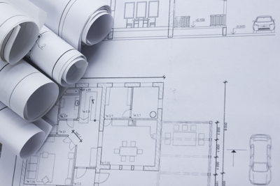
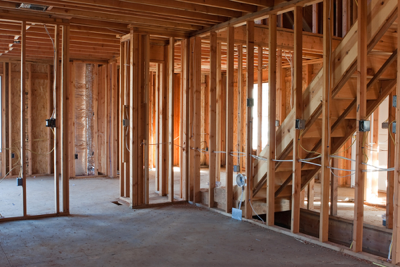

Our Process
We work with you every step of the way
Step 1: Communication is Key
During our initial meeting we want to get to know you; your current life and your future plans, all so we can cater to your specific needs and customize your current or future home. Noto Home Builders will keep you involved every step of the way by phone, email, or in-person meetings throughout the building process. We want to make sure you never feel left out during this very exciting and eventful time and are comfortable with Noto Home Builders building your dream home!

Step 2: Design Stage
If you need any house plans or drawings we can help! Noto Home Builders works with local architects and home designers to put your ideal home on paper. Each project is customized to fit you and your needs.Step 3: Pricing
Noto Home Builders is determined to get you the best price possible for your home renovation or custom new home. We will work with you and your ideal budget to make your dream home a reality.
Step 4: Contract
Once you have reviewed the plans and estimate and everyone has agreed upon them, it is time to sign and get started! Just like with everything else Noto Home Builders does, this contract will be custom fit just for you.
Step 5: Permitting
Once the construction contract is signed it is time for us to submit all plans for approval.
Step 6: Design Selections
Here is the fun part! This is where you get to pick out everything from paint colors, light fixtures, appliances, finishes, flooring, tile, and everything in between. Noto Home Builders will help guide you along and assist with any questions all while keeping you within your budget.Step 7: Construction
Once the permitting is complete it is now time to start your custom project!
Step 8: Final Walk-Thru
During this step we will take you through your newly renovated or custom home to make notes on any minor last minute adjustments that need to be made.Step 9: Welcome Home
This is the step we like the best; where you get to enjoy the home you've always wanted!